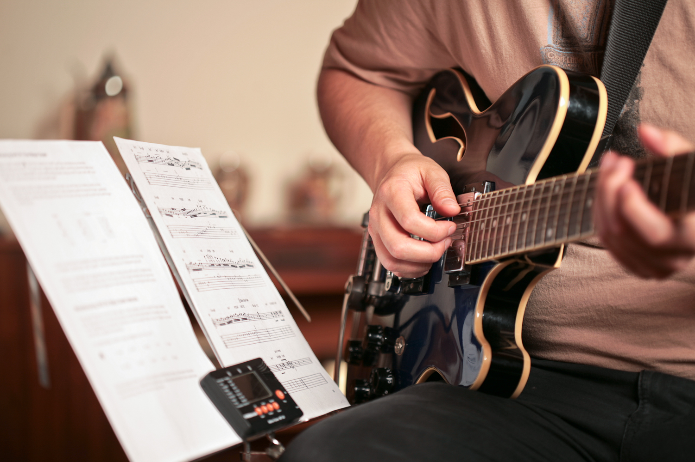

Porque se llaman instrumentos de cuerda?
Los instrumentos de cuerda o cordófonos son instrumentos musicales que producen sonidos por medio de las vibraciones de una o más cuerdas, usualmente amplificadas por medio de una caja de resonancia. Estas cuerdas están tensadas entre dos puntos del instrumento y se hacen sonar pulsando, frotando o percutiendo la cuerda.
En la orquesta clásica, se llama «cuerdas» al conjunto de instrumentos de cuerda frotada formado por los grupos de violines (normalmente divididos en violines primeros y segundos), violas, violonchelos y contrabajos. Lo mismo sucede con la orquesta de cuerdas, que está conformada por los mismos instrumentos. De forma similar se habla de un trío, cuarteto o quinteto de cuerdas, cuando se trata de agrupaciones de violín, viola y violonchelo.